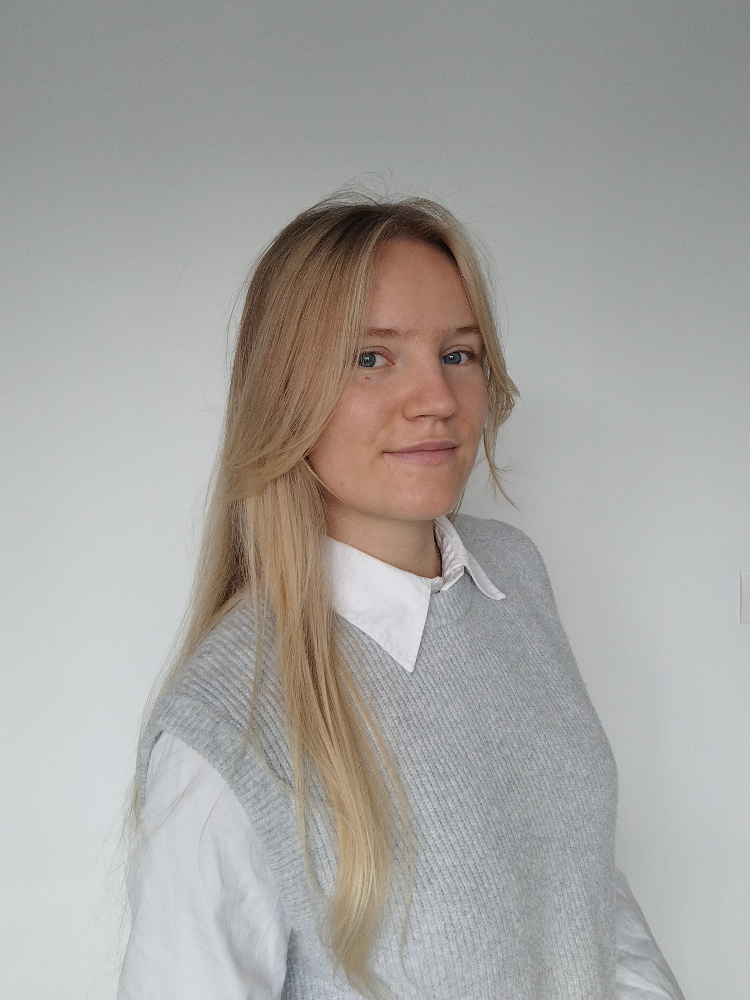

À propos de moi...

Ayant récemment achevé mon doctorat en Mathématiques appliquées à la recherche médicale contre le cancer du sein, je suis actuellement à la recherche d'un emploi, aux alentours d'Angers, dans l'univers de l'analyse de données.
N'hésitez pas à parcourir ce site afin d'en savoir plus sur mon parcours professionnel, et mes compétences.